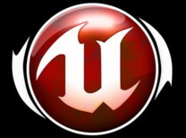
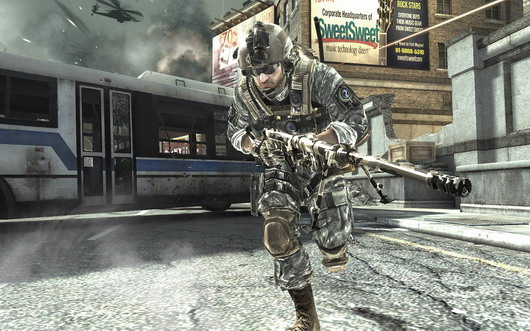
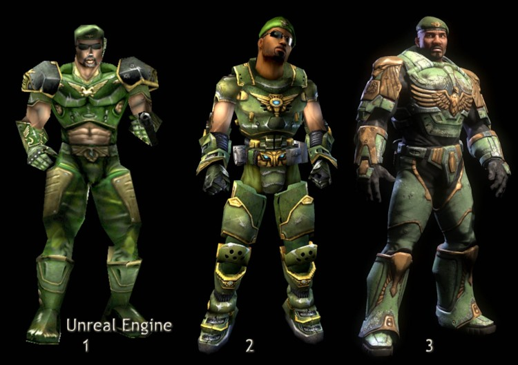
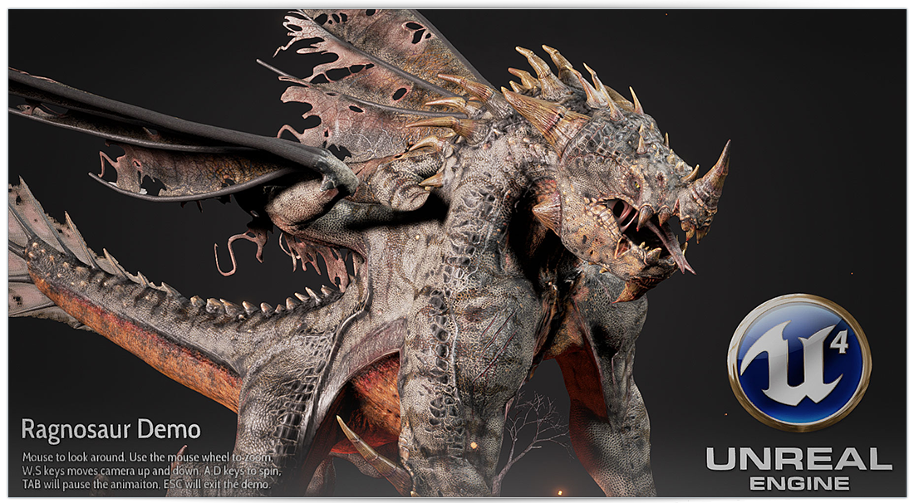

언리얼 엔진 1은 크게 언리얼 버전과 언리얼 토너먼트 버전으로 나누어져 있다.
언리얼 버전은 빌드 2xx까지이며 언리얼 토너먼트 버전은 빌드 300부터 613까지이다.
언리얼 토너먼트의 공식적인 최종 패치에서 확인할 수 있는 버전 넘버는 436이지만 그 후 라이센시에게 제공된 최종 버전은 613으로 언리얼 엔진 2로 넘어가기 직전의 버전이며 언리얼 엔진 2의 초기 특징들(하드웨어 T&L, 스태틱 메쉬, 스켈레탈 애니메이션 등) 몇 가지를 담고 있어 언리얼 엔진 1.5라고 부르기도 했지만 언리얼 엔진 1.5가 공식적인 명칭은 아니다

빌드 633버전부터는 공식적으로 언리얼 엔진 2로 분류된다.
이 버전이 처음 라이센스 된 시기인 2001년경에는 언리얼 워페어 엔진이라고 불리기도 했는데 이유는 언리얼 워페어라는 제목을 가진 게임을 언리얼 엔진 2의 초기 버전으로 개발했었기 때문이다.
언리얼 워페어는 개발 도중 취소 되었으나 언리얼 엔진 2는 계속 버전업됐으며, 언리얼 엔진 2로는 언리얼 2, 언리얼 챔피언쉽, 언리얼 토너먼트 2003이 개발된다. 언리얼 엔진 2의 최종 빌드 버전은 2227이다.
버전 2500부터는 DirectX 9 및 셰이더 모델 2 & 3 기반 기술과 64비트 연산을 지원하는 등 기술적인 부분에서의 큰 향상을 이루며 언리얼 엔진 2.5라는 공식적인 명칭을 사용하는데, 버전 2227까지는 PS2, XBOX, 게임큐브 등의 콘솔도 지원한 반면, 언리얼 엔진 2.5가 시작되는 버전 2500부터 언리얼 엔진 2.5의 최종 버전인 3369까지는 오로지 PC 플랫폼(윈도우, 리눅스, 맥OS)만을 지원하며, 언리얼 엔진 2.5는 기존의 언리얼 엔진 2에서 무상 업그레이드가 되지 않으며 별도로 추가의 비용을 지불하고 라이센스를 해야 했다.
이처럼 PC 플랫폼 전용인 언리얼 엔진 2.5를 XBOX 전용으로 이식한 버전이 언리얼 엔진 2X라고 부르기도 하였는데, 언리얼 엔진 2X는 사실상 언리얼 엔진 2.5의 일부로 볼 수 있다.
언리얼 엔진 2X로는 언리얼 챔피언쉽 2가 개발되었다.

언리얼 엔진 3는 빌드 버전이 초기화 되었으며 최초 라이센스 시의 버전이 1xx부터 시작했다.
언리얼 엔진 3는 언리얼 엔진 3.5 같은 중간 세대 구분은 하지 않고 언리얼 엔진 3 넘버링을 유지하면서 언리얼 엔진 4로 완전히 넘어가기 전까지, 언리얼 엔진 3에 지속적이고 두드러지는 업데이트를 계속해서 행하였다.

빌드번호는 2012년 8967부터 시작했다가 2014년 초 일반 공개를 통해 버전 구분을 빌드번호가 아닌 통상 버전 방식으로 변경되었다.
비주얼 스튜디오와 파트너쉽을 맺으면서 별도의 플러그인 설치없이 설정만 하면 C++ 프로젝트를 수행할 수 있게 되었다.
4.9버전까지는 비주얼 스튜디오 2013에서만 제대로 작동하며 비주얼 스튜디오 2015의 경우 언리얼 소스코드를 받고 컴파일한 뒤 따로 설정을 해주어야 했으나[18] 4.10버전 이후는 비주얼 스튜디오 2015를 정식으로 제대로 지원하게 되었고 곧 필수가 되었다.
4.16 버전부터는 비주얼 스튜디오 2017을 지원한다.
